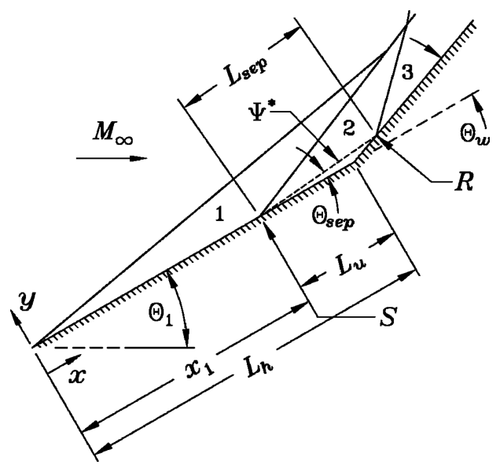
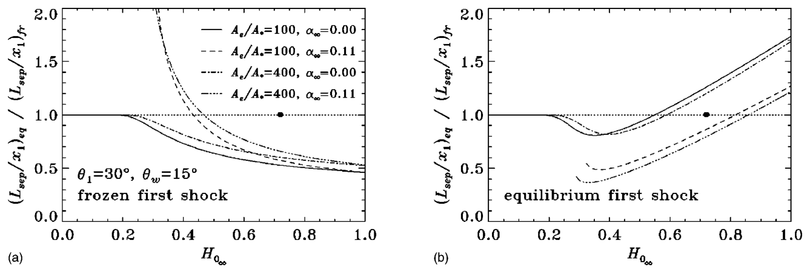
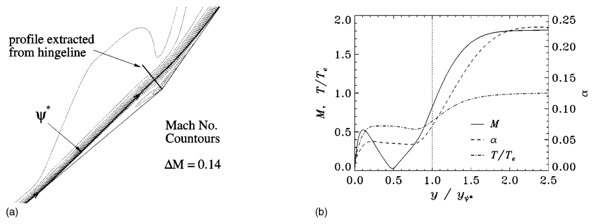
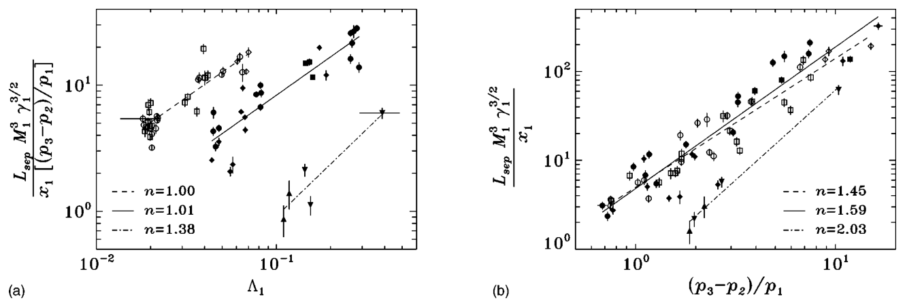

01中文摘要
在 T5 激波风洞中以氮气双楔模型研究非平衡真实气体对分离长度的影响，用非平衡无粘流场计算确定局部外流条件，并提出计入壁温影响的分离长度标度参数。作者把真实气体机制分为粘性区外与内两类，内部机制再按分离上/下游细分。基于理想解离气体模型与非反应分离长度标度律的分析表明：解离引起的外部机制在低入射角可缩短分离，高入射角则取决于自由流解离；分离上游边界层复合使分离略减。关联显示分离长度与再附压比近似线性，转捩干扰存在雷诺数效应；高焓下无量纲分离长度显著增大，归因于冷壁与自由流解离共同作用下分离下游自由剪切层中的复合。
原始摘要（英文/原文）
Experiments were performed in the T5 Hypervelocity Shock Tunnel to investigate nonequilibrium real-gas effects on separation length using a double-wedge geometry and nitrogen test gas. Local external flow conditions were estimated by computing the inviscid nonequilibrium flow field. A new scaling parameter was developed to approximately account for wall temperature effects on separation length for a laminar nonreacting boundary layer and arbitrary viscosity law. A classification was introduced to divide mechanisms for real-gas effects into those acting internal and external to viscous regions of the flow. Internal mechanisms were further subdivided into those arising upstream and downstream of separation. Analysis based on the ideal dissociating gas model and a scaling law for separation length of a nonreacting boundary layer showed that external mechanisms due to dissociation may decrease separation length at low incidence but depend on the free-stream dissociation at high incidence. A limited numerical study of reacting boundary layers showed that internal mechanisms due to recombination occurring in the boundary layer upstream of separation cause a slight decrease in separation length relative to a nonreacting boundary layer with the same external conditions. Correlations were obtained of experimentally measured separation length using local external flow parameters computed for reacting flow, which scales out external mechanisms but not internal mechanisms. These showed the importance of the new scaling parameter in high-enthalpy flows, a linear relationship between separation length and reattachment pressure ratio, and a Reynolds-number effect for transitional interactions. A significant increase in scaled separation length was observed in the experimental data at high enthalpy. The increase was attributed to an internal mechanism arising from recombination in the free-shear layer downstream of separation, perhaps altering its velocity profile. This real-gas effect depends on the combined presence of free-stream dissociation and a cold wall.
02阅读说明
类型：实验/理论/数值混合的期刊论文（Physics of Fluids 12(10): 2661–2687, 2000, DOI 10.1063/1.1289553，28页，126篇参考文献）；材料范围：bundle 含第1–28页全文与16幅已抓图（图1–11、14、17、18、20、21；图12、13、15、16、19未在抓图清单）；图表可读性：正文与图注基本完整，但双栏 OCR 严重错位，公式中的小数点、角度符号、上下标与部分变量名被破坏；已用 PDF 第13–16页核对式(7)–(20)与式(22)–(35)，式(10)–(11)的指数/符号、式(36)–(38)仍辨识受限；信息完整度：实验条件、表I–IV、方法、推导与结论齐全。 文章类型：期刊
03一句话核心与三句话摘要
T5激波风洞双楔高焓分离实验：提出壁温因子Λ1的新标度，并区分内外真实气体机制。
- 论文在 T5 自由活塞激波风洞中用氮气、双楔模型研究高焓激波/边界层干扰，以全息干涉测量分离长度 Lu 与分离角 θsep，并用非平衡无粘计算重建分离区外部流动参数（p2661、p2664–2667）。 原文明确
- 由分界流线动量平衡结合三层渐近理论导出 Lsep/x1 ∝ Λ1/(γ1^{3/2}M1^3)·((p3−p2)/p1)^{3/2}，其中 Λ1=(μw/μ*)(T*/Te)^3(Tw/Te)^{1/2}；实验关联进一步给出对压力比的近线性依赖与 √Re_x1 依赖（式19–21，p2673、p2679–2680）。 AI概括
- 高焓层流数据经新标度后仍比低焓数据高约3倍，作者把该增量归因于分离下游剪切层/回流区复合并排除主要外部机制、Reynolds 数与驱动气体污染解释（p2682–2684）。 AI概括
04核心内容清单
| 要点 | 类型 | 重要性 | 原文依据 | 属性 |
|---|---|---|---|---|
| 提出新的壁温标度因子 Λ1=(μw/μ*)(T*/Te)^3(Tw/Te)^{1/2}，把壁温对层流分离长度的影响纳入 Lsep/x1 标度。 | 理论贡献 | A | 式(19)–(20)，p2673；图20，p2682 | 原文明确 |
| 在本文超声速干扰范围（1<M1<5）内，实验 Lsep 对再附压力比 (p3−p2)/p1 近似线性，而非高超声速经验式的二次方。 | 实验规律 | A | 图19，p2679–2681 | 原文明确 |
| 高焓层流干扰的标度分离长度比低焓层流约高3倍。 | 核心现象 | A | 图19、p2684 | 原文明确 |
| 使用 Λ1 后高/低焓数据散差显著减小：B1–3 的 d̄ 由0.533降至0.293（P=0.081），C1–4 由0.318降至0.157（P=0.002）。 | 统计证据 | A | 表IV，p2682 | 原文明确 |
| 外部机制：第一楔冻结、仅再附激波后离解时，p3 降低可使 Lsep 在 H0∞=1 时减小达50%。 | IDG 结果 | A | 图10(a)、p2675 | 原文明确 |
| 内部上游机制：冷壁边界层复使 Cf 增加<5%，按式(17)只导致 Lsep 略降。 | 数值结果 | A | 图14、p2678 | 原文明确 |
| 观测到的高焓 Lsep 增大被归因于分离下游自由剪切层/回流区复使 τc* 降低，需要自由流离解与冷壁共存。 | 机制推断 | A | p2684–2685 | AI概括 |
| 分离剪切层转捩使 Lsep 在 Re_x1≈1–4×10^5 陡降，转捩上游移动是主要原因。 | 转捩效应 | A | 图21、p2682–2683 | 原文明确 |
| 三层渐近理论给出 Lsep/x1∝Λ1/(γ1^{3/2}M1^3)((p3−p2)/p1)^{3/2}，但只提供部分标度、不能预测 Re_x1 依赖。 | 推导结果 | B | 式(12)–(20)，p2672–2673 | 原文明确 |
| IDG 模型以常 ρd 近似离解气体的质量作用定律，这是其适用性的主要限制；平衡/冻结解还需与实验外部条件一致。 | 模型限制 | B | p2674–2675 | 原文明确 |
| C4 预期有显著驱动气体污染，但估算污染对参数组的最大影响仅约15%，不足以解释高焓偏移。 | 误差排除 | B | p2683–2684 | 原文明确 |
| 实验为有限展长双楔、锥形自由流，但 b/δ1≈100–200，端部效应可忽略；三维/转捩仍限制定量结论。 | 实验局限 | C | p2666–2667、p2685 | AI概括 |
05引言：研究问题与领域缺口
激波/边界层干扰产生的分离区长度影响高超声速飞行器舵面控制效率、发动机性能与尾流，但高焓真实气体对 Lsep 的作用机制缺乏统一解释：已有实验要么处于真实气体效应不显著的区间，要么结论互相矛盾；已有计算在不同条件下给出增大或减小（p2661–2663）。作者把“真实气体效应”定义为化学/热非平衡相对于无反应、无振动松弛参考流的变化，并指出激波风洞自由流本身可能部分离解，必须明确参考态（p2662）。研究目标是建立描述真实气体机制的框架，在 T5 中用双楔（前板+襟翼）产生二维上游拐角分离，以氮气简化化学，并通过实验与计算检验各机制；重点放在纯层流干扰，同时承认实验包含转捩/湍流工况（p2661–2662）。
06流动条件与几何构型
| 项目 | 数值/描述 | 依据 | 备注 |
|---|---|---|---|
| 试验气体 | 氮气（N2），二元离解气体；喷管自由流在高焓下部分离解 | p2661、p2664 | |
| 风洞与喷管 | T5 自由活塞激波风洞，压缩空气驱动；锥形喷管7°半角、30 cm出口；Ae/A*=100、225、400 | p2664 | |
| 模型几何 | 前板展长20.32 cm×弦长10.16 cm；全展襟翼弦长5.08 cm；θw=5°–40°（5°递增）；θ1=15°、30°、35°、40°；前缘半径约100 μm；不锈钢湿表面；壁温约300 K | p2664 | |
| 参考长度 | Re∞ 基于 Lh=10 cm；分离长度以 x1（前缘到分离点）无量纲化 | 表I，p2664；p2662 | |
| A1 / Ae/A*=100 | h0=3.9 MJ/kg；p0=12 MPa；Re∞(Lh)=6.8×10^5；α∞=4.5×10^-3；T∞=340 K；Tv∞=2200 K；ρ∞=0.034 kg/m³；u∞=2.5 km/s；p∞=5.4 kPa | 表I，p2664 | |
| A2 / Ae/A*=100 | h0=4.9 MJ/kg；p0=39 MPa；Re∞=6.6×10^5；α∞=11×10^-3；T∞=450 K；Tv∞=2100 K；ρ∞=0.087 kg/m³；u∞=2.9 km/s；p∞=20 kPa | 表I，p2664 | |
| A2 / Ae/A*=225 | h0=4.9 MJ/kg；p0=39 MPa；Re∞=7.9×10^5；α∞=7.3×10^-3；T∞=330 K；Tv∞=2200 K；ρ∞=0.048 kg/m³；u∞=2.9 km/s；p∞=8.1 kPa | 表I，p2664 | |
| A2 / Ae/A*=400 | h0=4.9 MJ/kg；p0=39 MPa；Re∞=9.0×10^5；α∞=5.3×10^-3；T∞=260 K；Tv∞=2300 K；ρ∞=0.029 kg/m³；u∞=3.0 km/s；p∞=4.1 kPa | 表I，p2664 | |
| B1 / Ae/A*=100 | h0=7.0 MJ/kg；p0=6.3 MPa；Re∞=6.5×10^5；α∞=1.1×10^-3；T∞=680 K；Tv∞=3000 K；ρ∞=0.0098 kg/m³；u∞=3.4 km/s；p∞=4.1 kPa | 表I，p2664 | |
| B1 / Ae/A*=225 | h0=7.0 MJ/kg；p0=6.3 MPa；Re∞=7.8×10^5；α∞=0.87×10^-3；T∞=450 K；Tv∞=3100 K；ρ∞=0.0059 kg/m³；u∞=3.4 km/s；p∞=1.2 kPa | 表I，p2664 | |
| B1 / Ae/A*=400 | h0=7.0 MJ/kg；p0=6.3 MPa；Re∞=8.8×10^5；α∞=0.62×10^-3；T∞=380 K；Tv∞=3200 K；ρ∞=0.0037 kg/m³；u∞=3.5 km/s；p∞=0.72 kPa | 表I，p2664 | |
| B2 / Ae/A*=100 | h0=8.3 MJ/kg；p0=20 MPa；Re∞=6.3×10^5；α∞=2.8×10^-3；T∞=840 K；Tv∞=2800 K；ρ∞=0.026 kg/m³；u∞=3.7 km/s；p∞=12 kPa | 表I，p2664 | |
| B2 / Ae/A*=225 | h0=8.3 MJ/kg；p0=20 MPa；Re∞=7.6×10^5；α∞=2.0×10^-3；T∞=590 K；Tv∞=2900 K；ρ∞=0.015 kg/m³；u∞=3.8 km/s；p∞=3.8 kPa | 表I，p2664 | |
| B2 / Ae/A*=400 | h0=8.3 MJ/kg；p0=20 MPa；Re∞=8.6×10^5；α∞=1.5×10^-3；T∞=470 K；Tv∞=3000 K；ρ∞=0.0094 kg/m³；u∞=3.8 km/s；p∞=2.3 kPa | 表I，p2664 | |
| B3 / Ae/A*=400 | h0=11 MJ/kg；p0=57 MPa；Re∞=8.2×10^5；α∞=3.2×10^-3；T∞=670 K；Tv∞=3000 K；ρ∞=0.023 kg/m³；u∞=4.3 km/s；p∞=7.1 kPa | 表I，p2664 | |
| C1 / Ae/A*=400 | h0=21 MJ/kg；p0=28 MPa；Re∞=7.2×10^5；α∞=0.81×10^-3；T∞=1300 K；Tv∞=3900 K；ρ∞=0.0070 kg/m³；u∞=5.6 km/s；p∞=4.1 kPa | 表I，p2664 | |
| C2 / Ae/A*=100 | h0=24 MJ/kg；p0=17 MPa；Re∞=5.0×10^5；α∞=0.73×10^-3；T∞=2700 K；Tv∞=4000 K；ρ∞=0.011 kg/m³；u∞=5.7 km/s；p∞=12 kPa | 表I，p2664 | |
| C2 / Ae/A*=225 | h0=24 MJ/kg；p0=17 MPa；Re∞=6.3×10^5；α∞=0.61×10^-3；T∞=1800 K；Tv∞=4100 K；ρ∞=0.0065 kg/m³；u∞=5.8 km/s；p∞=6.8 kPa | 表I，p2664 | |
| C2 / Ae/A*=400 | h0=24 MJ/kg；p0=17 MPa；Re∞=7.3×10^5；α∞=0.48×10^-3；T∞=1400 K；Tv∞=4200 K；ρ∞=0.0041 kg/m³；u∞=5.9 km/s；p∞=2.5 kPa | 表I，p2664 | |
| C4 / Ae/A*=100 | h0=28 MJ/kg；p0=23 MPa；Re∞=4.8×10^5；α∞=0.83×10^-3；T∞=3200 K；Tv∞=4100 K；ρ∞=0.013 kg/m³；u∞=6.0 km/s；p∞=17 kPa | 表I，p2664 | |
| C4 / Ae/A*=225 | h0=28 MJ/kg；p0=23 MPa；Re∞=6.0×10^5；α∞=0.63×10^-3；T∞=2200 K；Tv∞=4200 K；ρ∞=0.0073 kg/m³；u∞=6.2 km/s；p∞=11 kPa | 表I，p2664 | |
| C4 / Ae/A*=400 | h0=28 MJ/kg；p0=23 MPa；Re∞=7.0×10^5；α∞=0.57×10^-3；T∞=1700 K；Tv∞=4300 K；ρ∞=0.0052 kg/m³；u∞=6.3 km/s；p∞=8.1 kPa | 表I，p2664 | |
| 驻室不确定度 | p0 ±5%；h0 单发 ±8%；部分工况发次间 h0 变化达 ±10%、p0 达 ±15%；自由流条件由喷管计算给出，p∞ ±6%、ρ∞ ±7.8%、T∞ ±5.6%、u∞ ±3%、α∞ ±20%、Tv∞ ±1.6% | p2664 | |
| 污染判断 | C4 一致过 tailoring，预期在 tlas 时有显著驱动气体污染；C2 略欠 tailoring，tlas 后数百 μs 内污染不超过几个百分点；其余工况在 tlas 时无明显污染 | p2666 | |
| 壁面催化条件 | 数值计算可切换完全非催化（零法向梯度）与完全催化（零原子质量分数）；实验不锈钢表面预计对氮复非催化 | p2667、p2670 |
07核心现象与关键参数
| 参数 | 定义 | 数值 | 关系/说明 | 依据 |
|---|---|---|---|---|
| Lsep | 分离点 S 到再附点 R 的分离区长度 | 由干涉图测 Lu 与 θsep 经图1几何换算；各工况随 θ1、θw、h0 变化 | 以 x1 或 δ1* 无量纲化 | p2662、图1、p2665 |
| Lu、θsep | 干涉图可直接测量的分离区特征长度与分离角 | 由全息干涉/阴影图读取；主观不确定度以误差棒计入 | Lsep 由图1几何关系求得 | p2665、图3 |
| Λ1 | 壁温/粘度参考温度标度因子 | Λ1=(μw/μ*)(T*/Te)^3(Tw/Te)^{1/2}；实验范围内变化超过一个量级 | Lsep/x1∝Λ1/(γ1^{3/2}M1^3)((p3−p2)/p1)^{3/2} | 式(20)，p2673 |
| p3/p2、(p3−p2)/p1 | 再附区压力比与相对压力升 | 实验关联中 Lsep 随 (p3−p2)/p1 近似线性；表I给出 p∞，未单列 p3 | 线性压力比依赖，图19 | p2679–2681 |
| pinc | 起始分离压力 | 由三层理论式(35)给出；IDG 计算中令 p2=pinc | (pinc−p1)/p1≈1.04γ1M1²(C*Re_x1/(M1²−1))^{1/4} | 式(35)，p2675 |
| Re_x1 | 基于前缘到分离点距离 x1 的 Reynolds 数 | 实验/计算覆盖约10^5–10^6量级；转捩陡降出现在1–4×10^5 | 层流 Lsep 随 Re_x1 增大；转捩后相反 | p2662、图21 |
| M1 | 分离点边界层边缘 Mach 数 | 本文实验/计算主要处于1<M1<5的超声速干扰范围 | Lsep 随 M1 减小而增大（既往结果） | p2662、p2681 |
| Tw/T1、γ1 | 壁温/边界层边缘温度比、比热比 | 壁温约300 K；高焓工况 Tw/T1 很小；γ1 在实验中变化不大 | 通过 Λ1 与 γ1^{3/2} 进入标度 | p2663–2664、p2682 |
| θw、θ1 | 襟翼偏角、前板入射角 | θw=5°–40°（5°递增）；θ1=15°、30°、35°、40° | θw 增大→p3/p2 增大→Lsep 增大；θ1 改变前缘激波与分离区外部条件 | p2664 |
| G | 气相 Damköhler 数（边界层反应率参数） | G=(x/ue)(dα/dt)_{w,α=αe}；用于图14 的 Cf 关联 | 非催化壁 Cf 随 G 增大而增加；催化壁仅依赖 αe | 式(36)，p2678 |
| H0∞、K∞、P∞、α∞ | IDG 无量纲滞止焓、动能/离解能、压力/动压、自由流原子质量分数 | 表II：C2/Ae=100 时 P∞=0.034、K∞=0.48、H0∞=0.71、ρd/ρ∞=1.2×10^7、α∞=0.11；Ae=400 时 P∞=0.017、K∞=0.51、H0∞=0.70、ρd/ρ∞=3.2×10^7、α∞=0.11 | IDG 斜激波方程(22)–(34)的输入 | 表II，p2676 |
| Re_Lsep、M2 | 以分离长度为尺度、以分离剪切层为参考的 Reynolds 数与区域2 Mach 数 | 转捩发生在 Re_Lsep≈2×10^4–2×10^5，对应2<M2<5 | 用于判断分离剪切层转捩 | p2683 |
| b/δ1 | 模型展长/分离点边界层厚度 | 本文约100–200，作者据此认为端部效应可忽略 | 侧壁效应仅在距侧缘约10δ1内显著 | p2666 |
| 统计量 d̄、P | 相对散差均值与 t 检验显著性 | B1–3：有Λ1时 d̄=0.293、σ=0.288；无Λ1时0.533、0.631，P=0.081。C1–4：有Λ1时0.157、0.155；无Λ1时0.318、0.248，P=0.002 | d 定义见式(38) | 表IV，p2682 |
08方法与数据
实验在 Caltech T5 自由活塞激波风洞完成，氮气试验气体，锥形喷管 7°半角、30 cm 出口、Ae/A*=100/225/400，h0≈3.9–28 MJ/kg、p0≈6.3–57 MPa；模型为 20.32 cm 展长×10.16 cm 前板弦长+5.08 cm 全展襟翼，θw=5°–40°（5°递增），θ1=15°/30°/35°/40°，前缘半径约100 μm，壁温约300 K（p2664）。分离长度用全息干涉/阴影法测量：由 Lu 与 θsep 经图1几何间接求 Lsep，并给出测量不确定度（p2665）。热流用同轴 E 型热电偶（响应约1 ms，200 kHz 采样，半无限体反卷积，20 kHz 低通，100 μs 平均），压力用 PCB 105B12 传感器（0.8 mm 凹置测压孔）（p2665–2666）。数值上用二维/轴对称热化学非平衡 RANS 代码（有限体积，双温度，Park 离解模型，Gupta 混合输运，Landau–Teller 振动松弛，Steger–Warming 通量分裂+Gauss–Seidel 线松弛），计算喷管（200×100）、无粘三楔（220×100，另做275×125网格校验）、单楔（218×100）与双楔（400×200）流场，并做100×75边界层计算（p2667–2671）。外部真实气体机制用理想离解气体（IDG）斜激波模型，分离长度标度用三层渐近理论推导；实验关联用局部外部参数、线性压力比与统计 t 检验（p2671–2683）。
| 项目 | 内容 | 依据 | 备注 |
|---|---|---|---|
| 实验设施 | T5 自由活塞激波风洞；压缩空气驱动；反射激波区作为储气室；锥形喷管7°半角、30 cm出口；Ae/A*=100/225/400 | p2664 | |
| 试验气体与模型 | 氮气；双楔模型（前板20.32×10.16 cm，襟翼5.08 cm），不锈钢，前缘半径约100 μm，θ1/θw 可调 | p2664 | |
| 分离长度测量 | 全息干涉（倍频 Nd:YAG 532 nm，脉宽约2 ns，视场7 cm）；部分工况阴影法；由 Lu、θsep 经图1几何换算 Lsep，并估算主观不确定度 | p2665、图3 | |
| 热流测量 | 同轴 E 型（constantan–chromel）表面热电偶，响应约1 ms；200 kHz 采样；半无限体一维热传导谱反卷积；20 kHz 低通；100 μs 平均；不确定度含1.7%电压转换、8%热物性、2倍标准差非定常项 | p2665 | |
| 压力测量 | PCB 105B12 微型压电传感器；0.8 mm 凹置测压孔；硅胶阻尼；与热流类似的谱滤波与单独标定；不确定度含平均期非定常与标定误差 | p2666 | |
| 流动品质与污染 | 用 Davies–Wilson 模型估计驱动气体污染到达时间；C4 过 tailoring、C2 略欠 tailoring；喷管驻点扰动与声学扰动有限，模型中心线近似二维 | p2666–2667 | |
| 非平衡 NS 代码 | 二维/轴对称有限体积 RANS；双温度（振动温度 Tv），电子激发/电离忽略；Park 离解模型、Gupta 混合输运、Landau–Teller 振动松弛；Steger–Warming 通量分裂、Gauss–Seidel 线松弛；层流无湍流模型 | p2667 | |
| 计算网格与边界 | 喷管200×100；无粘三楔220×100（网格校验275×125）；单楔218×100；双楔400×200；边界层100×75；壁面零速度、300 K、催化/非催化可选；超声速入流固定、出流零梯度 | p2667–2671 | |
| 外部流参数重建 | 先算准一维平衡喷管流，再算轴对称非平衡喷管；用无粘三楔（以直线代替分离区）提取站位1、2、3参数；用实验测得的分离几何与 p 修正密度/温度 | p2667–2671 | |
| IDG 模型 | Lighthill 理想离解气体斜激波方程；计算冻结/平衡双楔解与 Lsep/x1；ρd 取1.33×10^-5 kg/m³（N2），α∞=0.11或0 | p2674–2676、表II | |
| 三层渐近理论 | Stewartson–Williams 三层结构，ε=Re_x1^{-1/8}；下/中/上层坐标 ε^5、ε^4、ε^3；用式(12)的剪切层解与式(7)动量平衡导出新标度 | p2672–2673 | |
| 统计检验 | 对 Lsep 标度残差定义相对偏差 d（式38），比较含/不含 Λ1 的 d̄ 与 σ；用 Student 双侧 t 检验给出 P 值 | 式(38)、表IV，p2682 |
09核心推导与公式
先用分离分界流线上的动量/剪切力平衡描述 Lsep，再把三层渐近理论给出的分离下游剪切层速度剖面代入该平衡，得到 Lsep 对压力升、Mach 数、Reynolds 数与壁面剪切的标度；用参考温度法把壁面剪切换成壁温因子 Λ1。随后用 IDG 斜激波关系计算冻结/平衡外部流，以分离外部机制对 p3 与 Lsep 的影响。
关键假设
- 定常、二维、层流分离，Re_x1 足够大以满足三层渐近展开
- 分离区上游边界层可用 Blasius/参考温度法描述；分界流线 χ* 可近似为直线
- 再附压力 pR 与 p3 同量级，取 pR≈p3；壁面剪切相对分界流线剪切可忽略
- 分离区高度 yR 相对 Lsep 较小，可近似为上游台阶
- 壁温处于超临界冷却范围，经典三层理论适用（Brown et al.）
- 外部流动用 IDG 描述：二元离解、振动能近似冻结、质量作用定律中 ρd 取常数
- Lsep 的经验标度采用局部外部参数，压力比依赖取线性（由本文实验支持）
推导过程
对分界流线 χ* 取控制体：再附压力升作用在高度 yR 上，与沿 χ* 的剪切力积分平衡；忽略壁面剪切，得到式(7)。
Needham 的层流高超声速压缩拐角关联为式(8)，Katzer 的层流超声速激波干扰关联为式(9)；两式均给出对 M1 的逆三次方依赖，但压力比指数分别为2与1。
取小参数 ε=Re_x1^{-1/8}，下层（粘性不可压）坐标 YL=ε^{-5}y、中层 YM=ε^{-4}y、上层 YU=ε^{-3}y；用式(10)的尺度变量把下层方程化为标准形式。常数 a、b、d 由 M1、壁面条件与未受扰边界层剪切除决定（式11）；扫描件中速度指数与式11符号辨识受限。
Stewartson–Williams/Neiland 对分离下游大 scaled 距离给出式(12)：速度按 x̃^{1/3} 增长，横向相似变量以分界流线位置 A(x̃) 为原点。该解在分离下游与分离区解渐近匹配。
把式(7)改写为式(13)，用式(10)的变换与链式法则把被积函数写成式(14)；再取 yR=ε^5 b x̃^{1/3}、μc*=μw，解出 x̃R 的式(15)。
令 xR−x1=Lsep，展开 a、b、d 的 M1、Re_x1、壁面剪切依赖，F0''(0) 作为常数丢弃，得到式(16)；再用理想气体声速关系整理为式(17)。该式对任意未受扰边界层剖面成立，并显含 U0'(0) 的逆平方依赖。
用可压缩 Blasius 解与参考温度法给出 U0'(0) 的式(18)，其中 C*=ρ*μ*/(ρeμe)。代入式(17)并整理，得到式(19)；壁温与粘度影响集中到式(20)的 Λ1。对 C=1 的理想气体，Λ1 退化为 (Tw/Te)^{3/2}。
为同时纳入式(19)的 Λ1、γ1、M1 依赖、式(8)的 √Re_x1 依赖以及本文实验的近线性压力比依赖，作者组合成式(21)。该式是经验组装，不是纯理论预测；式(19)本身不能预测 Re_x1 依赖。
用式(22)–(27)定义无量纲压力 P、动能/离解能 K、滞止焓 H0，以及 IDG 状态方程与焓；对斜激波取法向分量（式25），把动量与能量方程化为密度比的二次方程（式28），其物理解为最大根（式29）–（式30），并要求 H0,1n>α2≥αmin（式31）。
冻结流取 α2=α1，式(29)退化为式(32)；平衡流再用质量作用定律式(33)与几何关系式(34)闭合，联立求 ρ̂、β、α2。给定楔角 θ 与上游 α1、P1、K1、ρd/ρ1，即可算冻结或平衡的弱斜激波解，并进一步求 p3、T、M2 等。
IDG 双楔计算中令 p2=pinc，pinc 由三层理论的式(35)给出。实验散差用式(38)的相对偏差 d 量化，并以 t 检验比较含/不含 Λ1 的 d̄。
适用边界：式(19)只基于三层理论的首阶项，不能预测 Re_x1 依赖；pR≈p3、yR 为小台阶、壁面剪切可忽略等近似只在部分条件成立；式(21)是经验组装；IDG 以常 ρd 近似质量作用定律，且平衡解可能不适用于低密度、低复合率的激波风洞流；式(10)速度指数与式(11)符号、式(36)–(38)的部分形式受 OCR 限制无法完全确认；整个标度针对层流非反应边界层，内部化学机制需另行处理。
10结果：主要发现与关键证据
实验 Lsep 数据按局部外部参数标度后并不落在单一曲线上，但按 h0 分组后每组在双对数坐标中近似直线，压力比指数接近1（图19，p2679–2680）。新壁温因子 Λ1 在实验范围内变化超过一个量级；把它纳入标度后，高焓与低焓数据趋于重合，相对散差 d̄ 由 B1–3 的0.533降至0.293（P=0.081）、由 C1–4 的0.318降至0.157（P=0.002）（图20、表IV，p2682）。高焓层流数据的标度 Lsep 比低焓层流高约3倍（图19、p2684）。随 Re_x1 增大，部分工况在 Re_x1≈1–4×10^5 出现 Lsep 陡降，作者用分离剪切层转捩上游移动到再附点之前解释（图21，p2682–2683）。IDG 计算表明：若第一楔冻结、仅再附激波后离解，p3 降低可使 Lsep 在 H0∞=1 时减小达50%；若第一楔也平衡，则 Re_x1、M1、Λ1 与 p3/p1 竞争，Lsep 可增可减（图10，p2675）。非平衡边界层计算显示上游复使 Cf 增加<5%，按式(17)只应导致 Lsep 略降（图14，p2678）。
| 发现 | 证据 | 证据类型 | 强度 | 位置 | 属性 |
|---|---|---|---|---|---|
| 新壁温因子 Λ1 显著改善实验 Lsep 关联：B1–3 的 d̄ 由0.533降到0.293（P=0.081），C1–4 由0.318降到0.157（P=0.002）。 | 表IV 的 t 检验与图20(a)(b) 对比；含 Λ1 时散差明显减小。 | 统计关联 | 强 | 表IV、图20，p2682 | 原文明确 |
| 本文超声速干扰范围内 Lsep 对 (p3−p2)/p1 近似线性，与高超声速经验式的二次方不同。 | 图19 按 h0 分组后在双对数坐标中直线斜率接近1；正文明确说“close to linear”。 | 实验规律 | 强 | 图19、p2679–2681 | 原文明确 |
| 高焓层流干扰的标度 Lsep 比低焓层流约高3倍。 | 图19 中高焓数据整体位于低焓数据上方；结论段给出“approximately by a factor of 3”。 | 核心现象 | 强 | 图19、p2684 | 原文明确 |
| 分离剪切层转捩使 Lsep 在 Re_x1≈1–4×10^5 出现陡降；转捩随 θw 增大而提前到更小 Re_x1。 | 图21 中标出的转捩工况与虚线路径；正文给出转捩 Re 范围与 θw 趋势。 | 转捩效应 | 强 | 图21、p2682–2683 | 原文明确 |
| IDG 外部机制：第一楔冻结、仅再附激波后离解时，p3 降低可使 Lsep 在 H0∞=1 时减小达50%。 | 图10(a) 的平衡/冻结 Lsep 比随 H0∞ 下降；正文明确给出“as much as 50% at H0∞=1”。 | 模型结果 | 强 | 图10(a)、p2675 | 原文明确 |
| 内部上游机制：冷壁边界层复使 Cf 增加<5%，按式(17)只应使 Lsep 略降；这与 Mallinson 等关于 Lsep 增大的猜测不一致。 | 图14 的 Cf 反应/冻结比及正文量级估计。 | 数值结果 | 中 | 图14、p2678 | 原文明确 |
| 在 C2/Ae=225 的全非平衡计算中，外部机制对 Lsep 的影响很小，结果接近冻结流；外部机制只在很高入射角、存在自由流离解时重要。 | 图10 中的单个非平衡计算点接近冻结线；正文说明该条件外部机制不重要。 | 条件性结论 | 中 | 图10、p2675 | 原文明确 |
| C4 的驱动气体污染即使按上限估计也只造成约15%的参数组变化，方向与观测偏移一致但量级远不足。 | 用完美气体喷管+楔流、He 质量分数至50%的估算；正文给出“on the order of a 15% reduction”。 | 误差排除 | 中 | p2683–2684 | 原文明确 |
| 观测到的高焓 Lsep 增大最可能来自分离下游自由剪切层/回流区复使 τc* 降低，需自由流离解与冷壁共存。 | 图17–18 的 α、T 分布；结论段的推测性表述；无直接冻结/反应对比计算。 | 机制推断 | 中 | 图17、图18、p2684–2685 | AI概括 |
| 模型展长相对分离点边界层厚度 b/δ1≈100–200，端部效应可忽略，中心线近似二维。 | 正文引用 Ball 的10δ1侧向影响尺度并给出本文 b/δ1 范围。 | 实验可信度 | 中 | p2666 | 原文明确 |
11机制解释与论证链
分离长度由分界流线上的动量/剪切平衡决定：再附压力升越大、沿 χ* 的剪切越弱，所需 Lsep 越长。三层渐近理论表明，分离下游剪切层的速度按 x^{1/3} 增长，其剪切水平与未受扰边界层的壁面剪切 U0'(0) 成正比；壁温降低通过参考温度效应提高近壁密度/粘度组合，改变 U0'(0)，从而由 Λ1 统一描述。外部真实气体机制改变无粘再附压力 p3：若只在再附激波后离解，p3 下降、Lsep 减小；若前缘激波后也离解，则 Re_x1、M1、Λ1、p3/p1 同时变化，净效果取决于 α∞ 与 H0∞。内部机制方面，冷壁边界层复使 Cf 略增（<5%），按标度只会略缩短 Lsep；而分离下游自由剪切层/回流区的复可能降低 τc*，从而解释实验中高焓 Lsep 增大约3倍。该下游机制需要自由流离解与冷壁同时存在，且对反应率与离解分数依赖很弱，这是作者的推测而非直接计算验证。
12讨论：结论、贡献与局限
作者把机制分为外部（粘性区之外的无粘化学）与内部（粘性区内的化学），内部再分为分离上游与下游（p2673）。外部机制通过 IDG 研究：再附激波后离解降低 p3 与 Lsep；前缘激波后离解则同时改变 Re_x1、M1、Λ1 与 p3/p1，方向取决于 α∞ 与 H0∞（p2674–2675）。内部上游机制用非平衡边界层计算：冷壁复使壁面密度升高、Cf 增加<5%，依式(17)应使 Lsep 略降，量级很小（p2678）。实验观测到的高焓 Lsep 增大无法由外部机制、Reynolds 数、三维性或 C4 驱动气体污染（估算仅约15%偏小）解释，作者推测是分离下游自由剪切层/回流区复使 τc* 降低，且需要自由流离解与冷壁同时存在（p2683–2685）。局限包括：外部机制不能与未知内部机制分离、低/高焓实验自由流条件不同、部分高入射工况不存在冻结解、IDG 的常 ρd 近似、三层理论仅给部分标度且不能预测 Re 依赖、实验为有限展长/锥形自由流且含转捩工况（p2675、p2684–2685）。
作者结论
T5 双楔实验与配套的非平衡无粘/边界层计算表明：层流高焓分离长度可用局部外部参数标度，但必须加入新的壁温因子 Λ1；实验 Lsep 对再附压力比近线性，且高焓层流数据比低焓高约3倍。外部真实气体机制（再附激波后离解降低 p3）可使 Lsep 减小达50%，但在本文多数高焓条件下外部机制并不重要；上游边界层复只使 Cf 增加<5%、Lsep 略降。作者把高焓增量归因于分离下游自由剪切层/回流区复使分界流线剪应力降低，并强调该机制依赖自由流离解与冷壁的组合，是激波风洞实验特有、飞行条件下不一定存在的效应。
主要贡献
- 给出包含壁温/参考温度效应的新分离长度标度因子 Λ1，并用实验统计检验其有效性。
- 把真实气体机制系统分为外部/内部、上游/下游，并用 IDG 与非平衡边界层计算分别评估。
- 获得双楔高焓层流/转捩分离长度数据库，识别压力比近线性、转捩 Re 范围与高焓约3倍增量。
- 指出下游自由剪切层复这一此前未被计算的内部机制，为后续研究提出可检验假设。
局限与未解决问题
（1）实验为有限展长双楔、锥形自由流，虽 b/δ1≈100–200，仍非严格二维；含转捩/湍流工况，层流结论需筛选。（2）外部机制无法与未知内部机制实验分离；低焓与高焓实验自由流条件不同，不能直接对比；部分高入射工况不存在冻结解。（3）IDG 采用常 ρd 的质量作用定律近似，平衡解在低复合率激波风洞流中可能不适用；平衡/冻结解与实验外部条件的一致性有限。（4）三层理论只给首阶标度，不能预测 Re_x1 依赖；式(21)为经验组装；pR≈p3 等近似未系统验证。（5）高焓增量归因于下游剪切层复，但没有冻结/反应对比计算，属推测；反应率与离解分数在实验中不能独立变化。（6）C4 污染、热流/压力测量、转捩判据（高于层流预测约25%差值）均带来不确定性；导流/驱动气体污染与三维效应未完全排除。（7）式(10)–(11)、式(36)–(38)部分符号/指数受 OCR 与扫描限制，无法逐项确认。
13对高速流动与工程的意义
该工作把高焓分离长度从零散经验关联推进到“可分解机制+可检验标度”的框架：Λ1 使不同壁温/焓值数据可在同一坐标下比较，线性压力比与 Re/转捩效应为工程关联提供依据；外部/内部、上游/下游的分类可直接指导后续计算与实验设计。对高超声速飞行器襟翼/控制面分离、激波风洞到飞行的外推、以及真实气体模型验证具有参考价值，尤其提醒“自由流离解+冷壁”这一风洞特有组合可能造成约3倍的 Lsep 偏差。
14核心图件




15可引用原文素材
| 原文短句 | 可支持的观点 | 位置 | 使用建议 |
|---|---|---|---|
| “poorly understood” | 论文指出现有真实气体分离机制缺乏统一解释。 | p2661 | 研究缺口 |
| “a linear relationship” | 摘要指出分离长度与再附压力比呈线性关系。 | p2661 | 核心结论 |
| “approximately by a factor of 3” | 高焓层流 Lsep 相对低焓的增量。 | p2684 | 定量现象 |
| “dissociation and a cold wall” | 作者认为观测到的内部机制需要自由流离解与冷壁同时存在。 | p2684 | 机制条件 |
| “for smaller Rex1” | 转捩随襟翼偏角增大而在更小的 Re_x1 发生。 | p2683 | 转捩规律 |
| “little dependence” | 高焓增量对反应率/离解分数依赖很弱。 | p2684 | 机制特征 |
| “a new scaling parameter” | 论文提出新的标度参数（Λ1）。 | p2661 | 贡献 |
16最终核验
| 核验项 | 结论 |
|---|---|
| 仅基于全文 | 实验条件、图注、公式与数值均取自 bundle 全文；式(7)–(20)、(22)–(35)另用原 PDF 第13–16页核对，未引用外部文献、教科书推导或未给出的数据。 |
| A 级要点有依据 | A级结论均有直接位置：式(19)–(20)与图20/表IV支持Λ1；图19支持线性压力比；图19与p2684支持约3倍高焓增量；图10支持50%外部机制；图14支持Cf<5%；图21支持转捩Re范围。 |
| 属性标注 | three_sentence、core_points、findings 均逐条标注【原文明确】【AI概括】【AI推断】；下游复机制、三维可忽略等推断已标为AI概括并给出强度/等级。 |
| 覆盖范围 | 覆盖bundle第1–28页、表I–IV、式(1)–(38)及16幅抓图的图注；图12、13、15、16、19未在抓图清单，未作为figures引用，但其正文结论已在IMRaD/findings中按正文页码引用。 |
| 无编造 | 未编造页码、图号、公式、工况或数值；表I的M∞列在OCR中对齐不清，未逐行编造；式(10)速度指数、式(11)符号及式(36)–(38)部分形式已标“受限于材料，无法确认”；文中未提及的量（如部分p3实测值）标为“文中未提及”。 |
需回原文确认
- 式(10)中速度尺度指数 nu 与式(11)常数 a 的完整形式是什么？OCR/扫描无法确认。
- 分离下游自由剪切层复使 τc* 降低的机制能否用冻结/反应对比计算直接验证？本文只有推测。
- IDG 常 ρd 近似在 C2/C4 低密度、低复合率条件下误差多大？平衡解与实验外部条件是否自洽？
- Λ1 标度在更宽 Re_x1、M1、Tw/T1 与不同气体（空气）下是否仍成立？本文仅氮气、有限范围。
- 高焓约3倍增量是否完全来自下游复？C4 污染、三维效应、转捩判据能否进一步排除？
- 转捩判据“高于层流预测约25%的层流-湍流差值”是否具有普适性？
- 激波风洞的“自由流离解+冷壁”组合在飞行条件下不存在时，如何把本文标度外推到飞行？
- 压力比线性依赖在更高 M1（高超声速）是否会转为二次方？本文仅1<M1<5。
17关联文献
依据标签、板块、构型与作者脉络自动关联，可据此追踪同一问题的前序与后续工作。
18引用格式
选择期刊风格后复制；出处保留原刊名。BibTeX 可直接用于 LaTeX。
引用格式
Davis, J. P. & Sturtevant, B. 2000 Separation length in high-enthalpy shock/boundary-layer interaction. Physics of Fluids 12 (10), 2661–2687. https://doi.org/10.1063/1.1289553
PDF上传 PDF 并更新本页
本页缺少全文、摘要或图件时，可在浏览器本地补入 PDF。解析完全在本机完成，不上传网络；完成后会更新本页的 PDF 打开链接、原摘要、IMRaD 机器抽取、关键句与含图页面。复杂的公式语义与中文深度解读仍以原文和既有精读记录为准。
Zotero 笔记摘录
双楔模型 研究真实气体非平衡效应对分离长度的影响。分析壁温、Re、转捩、复合反应的影响
完美气体部分：Lsep 随襟翼偏转/再附压比增大；随 M1 增大而减小；层流随 Rex1 增大而增大，转捩后随 Re 增大而减小；随 Tw/T1 增大而增大 真实气体 ：分外部/内部机制。外部：解离降低再附压力可减小 Lsep；高入射时依赖自由流解离。内部：分离上游边界层复合使 Cf 略增（<5%），略减小 Lsep；分离下游自由剪切层复合可能降低剪切应力，使高焓数据 scaled Lsep 增大约 3 倍，需自由流解离+冷壁